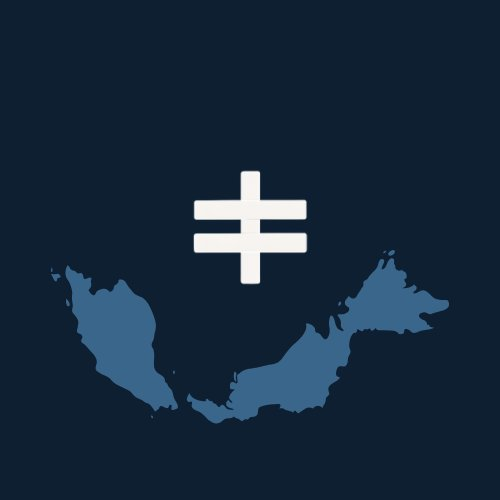
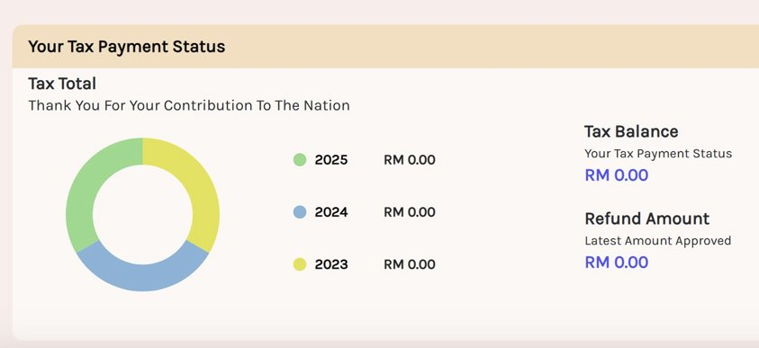
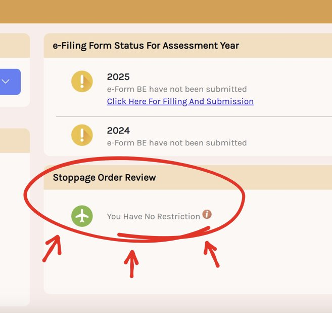
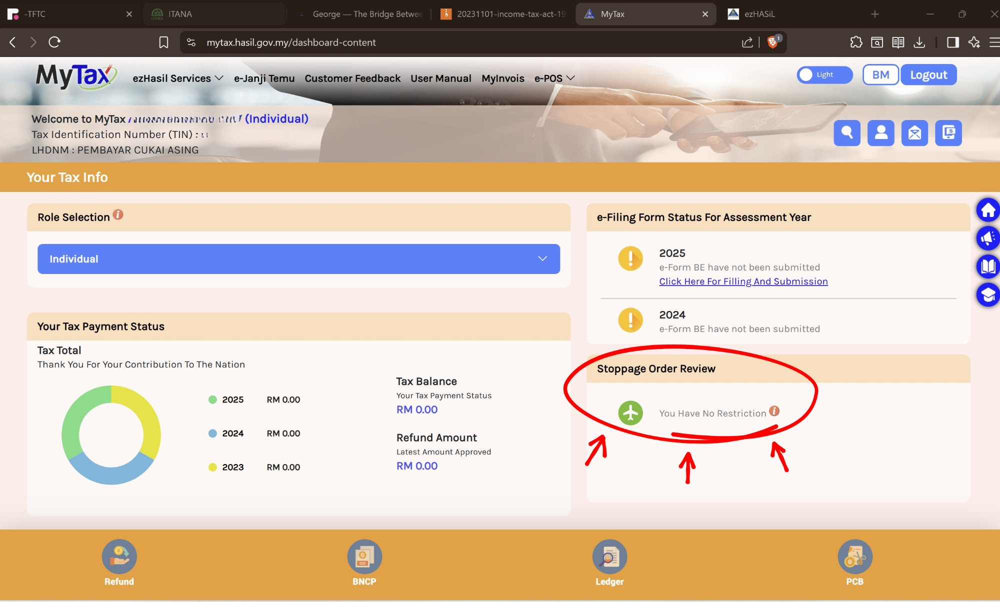
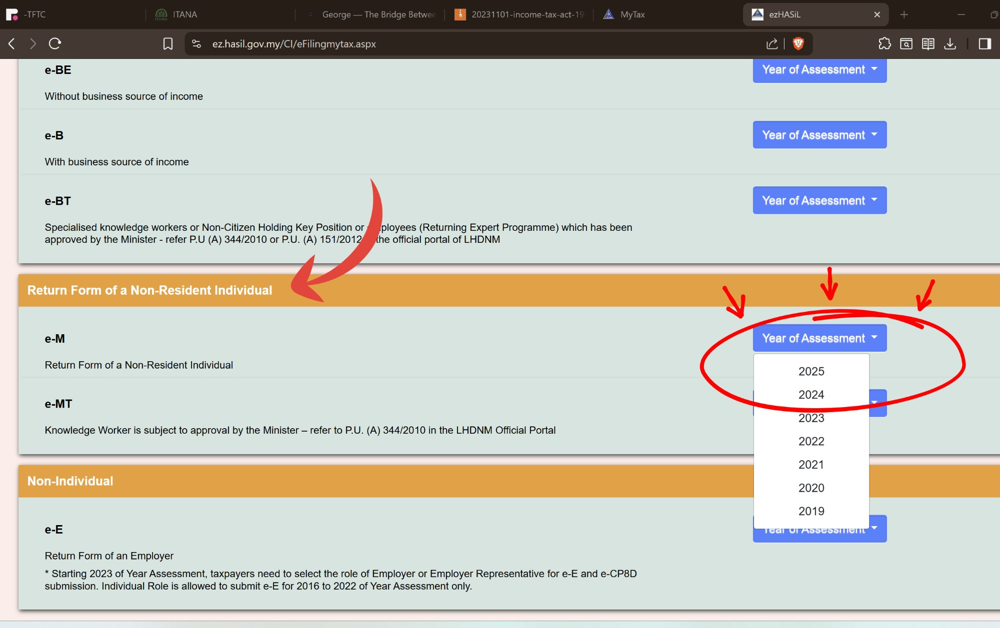
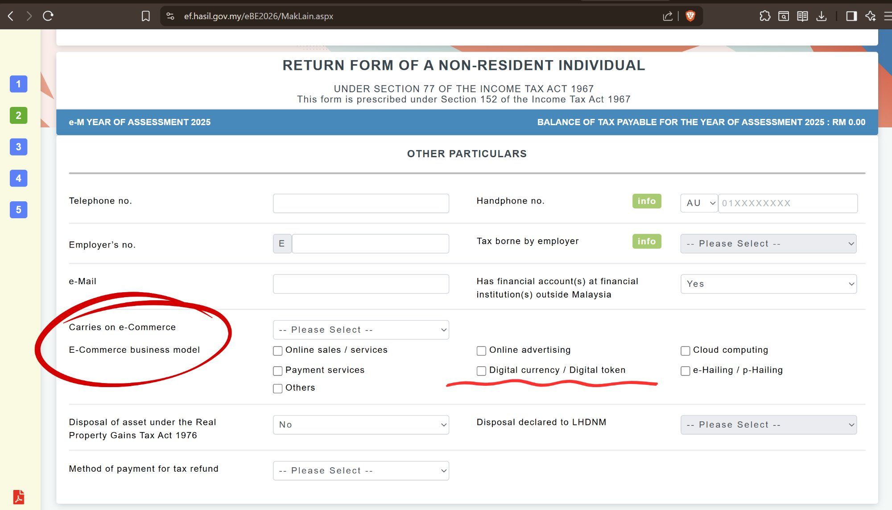

A short guide for digital nomads, remote workers, freelancers, and founders with foreign companies. YA 2024, 2025, and 2026.

This presentation provides general information about individual tax filing under the Malaysian Income Tax Act 1967. It is not tax advice or a substitute for professional consultation specific to your circumstances.
Your obligations depend on your individual facts: how many days you spend in Malaysia, where you physically perform your work, and how your income is structured. The legislation and LHDN administrative practice referred to here may change.
Confirm your position with a qualified tax adviser before filing or deciding not to file.
You are a foreigner living in or spending time in Malaysia. Your income comes from outside Malaysia.
Your tax residency is determined by physical presence, not citizenship or visa type.
Present in Malaysia for 182 days or more in a calendar year = resident for that year of assessment.
Linked consecutive-day periods (s.7(1)(b)), the 90-day test across multiple years (s.7(1)(c)), and deemed residency (s.7(1)(d)) can also apply.
If you don't pass any test, you are non-resident for that year. This is common for YA 2024 arrivals.
Keep a spreadsheet logging every border crossing. This is your primary evidence for the 182-day test — and linking periods across years.
| Date | Direction | From / To | Purpose | Days in MY |
|---|---|---|---|---|
| 15 Jan 2026 | Entry | Singapore → Malaysia | Return to NS base | |
| 28 Feb 2026 | Exit | Malaysia → Thailand | Holiday | 45 |
| 5 Mar 2026 | Entry | Thailand → Malaysia | Return to NS base | |
| 20 Jun 2026 | Exit | Malaysia → Australia | Client meetings | 107 |
The reason for travel can determine whether days abroad count toward linked residency periods under s.7(1)(b) and the 90-day test under s.7(1)(c). Record it while you remember it.
Count days inclusive of arrival, exclusive of departure. Back it up with passport stamps or immigration app screenshots. Keep one sheet per calendar year.
The primary test is simple: are you physically present in Malaysia for 182 days or more in a calendar year?
The count runs 1 January to 31 December — not a rolling 12 months. Each year of assessment stands alone.
Day of arrival in Malaysia counts. Day of departure does not. Days do not need to be consecutive — every day physically present adds to your total.
If Malaysia is your home base and you’re not away for extended periods, you will almost certainly pass the 182-day test without needing the other provisions.
But if your year is tight — maybe you spent two months in Europe over summer and did a long conference circuit in Q4 — then you may need the linking provisions on the next slide.
If you fall short of 182 days, two other tests can still make you resident. Both reward consistent presence and good records.
If you have a block of presence in Malaysia that connects to another block in the same or an adjacent year, temporary absences between them can be treated as days in Malaysia.
The absences must be connected to your Malaysian life. A conference in Singapore, a holiday in Thailand, visiting family abroad — these typically qualify. The legislation doesn’t define “connected” precisely, which is why recording your purpose of travel matters.
This is the safety net. If you were present for at least 90 days this year, AND you were resident or present for 90+ days in three of the four preceding years, this year counts as resident.
Your history supports the current year — not the other way around. This is why keeping records going back at least five years matters.
You have a long-term home base in Malaysia but move around for work and conferences. Short trips abroad don’t break your residency — but your records need to show that Malaysia is where you return to and that your absences are temporary.
Malaysian-sourced income, plus foreign-sourced income received in Malaysia (from 2022, subject to exemptions through 2036 if taxed at source).
Progressive rates: 0% to 30%
Eligible for reliefs, rebates, and DTA relief with 80+ treaty countries.
Malaysian-sourced income only. Foreign-sourced income is not taxable regardless of where you receive it.
Flat rate: 30% on employment and business income.
No reliefs, no rebates, and no DTA relief available.
Malaysia taxes income where the work is physically performed. Not where you are paid. Not where your company is registered.
"I'm paid into a foreign account, so it's not taxable." Wrong. Source depends on where you did the work.
For non-residents: employment income is exempt if you are in Malaysia for 60 days or fewer in the calendar year (PR 8/2011).
Lose it once you cross 60 days, even across multiple visits.
Freelancers, contractors, and directors' fees are excluded from this exemption. It applies to employment income only.
For most digital nomads and founders spending meaningful time in Malaysia, the 60-day exemption will not apply. The question then becomes whether a DTA can help.
If you are non-resident and tax resident in your home country, a DTA may override Malaysia's right to tax your employment income.
Work performed in Malaysia is Malaysian-sourced under s.12 and s.13. Under domestic law, it is taxable at 30% flat.
Article 15 can reallocate the taxing right to your home country if all three tests are met. This is not automatic. You must claim it in your return with a Certificate of Tax Residence from your home country.
This is a non-resident mechanism. Residents cannot use Article 15 to avoid Malaysian tax on work done in Malaysia. Residents use bilateral tax credits (Schedule 7) and FSI exemptions instead.
Residents are temporarily exempt from tax on foreign-sourced income received in Malaysia (dividends, interest, royalties, rental, investment returns already taxed abroad). Runs through end of 2026, extended to 2036.
Does not cover income from services performed in Malaysia. That is Malaysian-sourced regardless of where paid.
If Malaysia taxes income already taxed overseas, you can claim a credit for foreign tax paid (up to the Malaysian equivalent). Must be a Malaysian tax resident.
Claim within 2 years of the relevant assessment year. If your foreign return is filed later, you can amend your Malaysian return to claim the credit with evidence of tax paid.
Section 77(1) of the ITA requires "every person chargeable to tax" to furnish a return.
No chargeable income means no strict filing obligation.
The case for voluntary filing rests on limitation periods and evidentiary positioning.
Deemed assessment created. Five-year limitation clock starts. Your position is documented at the time you formed it. Defensible if queried later.
No deemed assessment. No clock running. The Director General can assess you by best judgment at any time. Your position has to be argued after the fact.
Note: s.91(3) removes all time limits in cases of fraud, wilful default, or negligence regardless of filing.

No. Filing a nil return asserts a position. It does not concede chargeability.
A return completed with zeros across all income fields says: I was present in Malaysia, I assessed my position, and I concluded I have no Malaysian-source income and no tax liability.
That is a statement of facts and legal analysis, not an admission of jurisdiction. It does not create an obligation where none existed.

If you hold a visa tied to income thresholds, LHDN already knows you earn money.
If you're here on a nomad visa, you're expected to file.
My personal bet is that failing to file at all will make me low-hanging fruit. And if there's a lot of low-hanging fruit around me and they come to harvest, I'm making sure that I don't get picked.
File. State your position. Start the clock. Be the green fruit up high.
This applies where you have no Malaysian-source chargeable income, or where after claiming allowable deductions your net chargeable income in Malaysia is nil.
| Non-Resident (Form M) | Resident (Form BE / B) | |
|---|---|---|
| Filing obligation on nil income | No on strict reading of s.77 | Arguable but LHDN expects filing |
| Effect of filing a nil return | Deemed assessment at nil; starts 5-year limitation clock under s.91 | Same mechanism applies |
| Effect of not filing | No clock. Open to best-judgment assessment under s.90(3), no time limit | Same risk applies |
| Recommended strategy | File voluntarily | File |
The limitation clock starts when you lodge. If your chargeable income is genuinely nil, filing protects that position.
Section 77B of the ITA allows one self-amendment per year of assessment.
Get it right the first time if you can. But if your position changes or you discover an error, the system does allow correction.



I'm contributing this pro bono because I want Network School to retain its long-termers and be a success.
General information only. Not advice specific to individual circumstances. Confirm with the current text of the ITA 1967 and applicable LHDN public rulings and guidelines — or consult with a licensed tax agent.